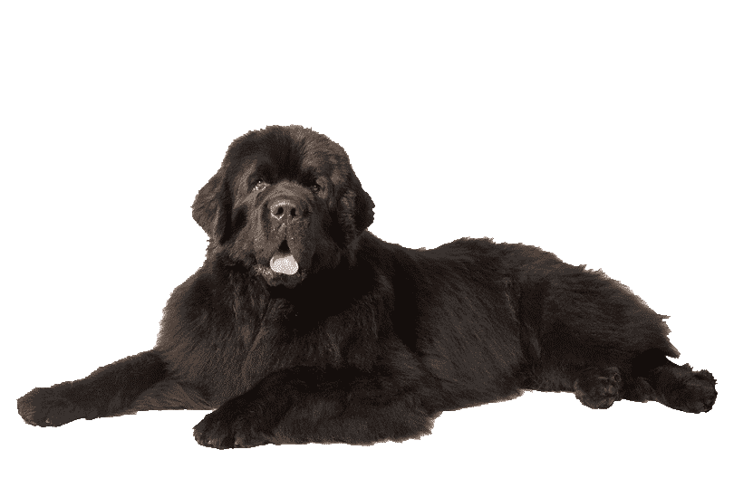

The Newfoundland dog is a large working dog. They can be either black, brown, or white-and-black (called Landseer).
However, in Canada, the country of their origin, the only correct colours are either black or Landseer.
They were originally bred and used as a working dog for fishermen in the Dominion of Newfoundland
(which is now part of Canada).They are known for their giant size, intelligence, tremendous strength,
calm dispositions, and loyalty. Newfoundland dogs excel at water rescue/lifesaving because of their muscular build,
thick double coat, webbed feet, and innate swimming abilities.
